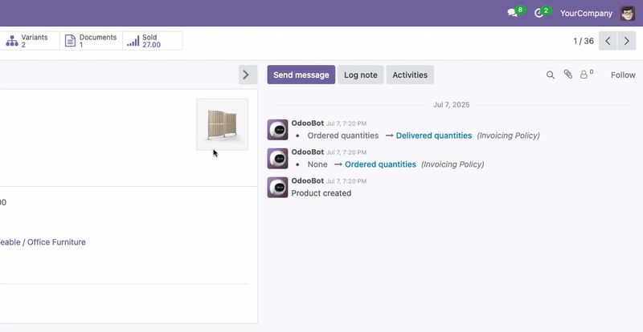

Form View Full Screen/Width & Chatter Hide
This module adds a toggle button for chatter in form view on large screens
Toggle the position of the chatter (messages & activities) to the side of the form view for better usability on wide monitors.
Instantly hide or show the chatter panel to maximize workspace and focus on form content.
Enable full-width (full screen) mode for form views, removing default width restrictions for a more immersive editing experience.

Support
Email:
prt.c.bhatti@gmail.com